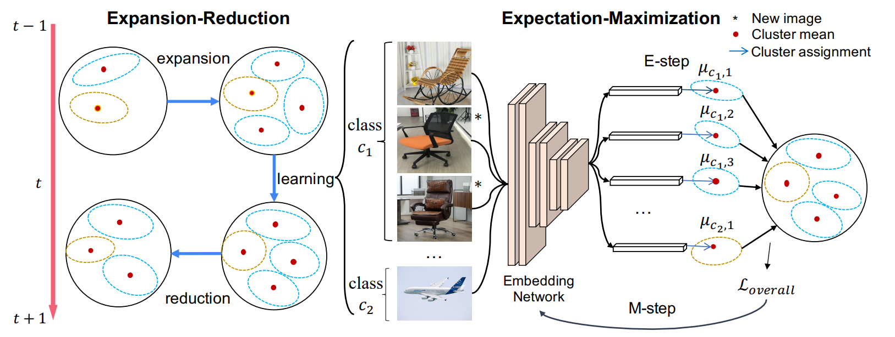
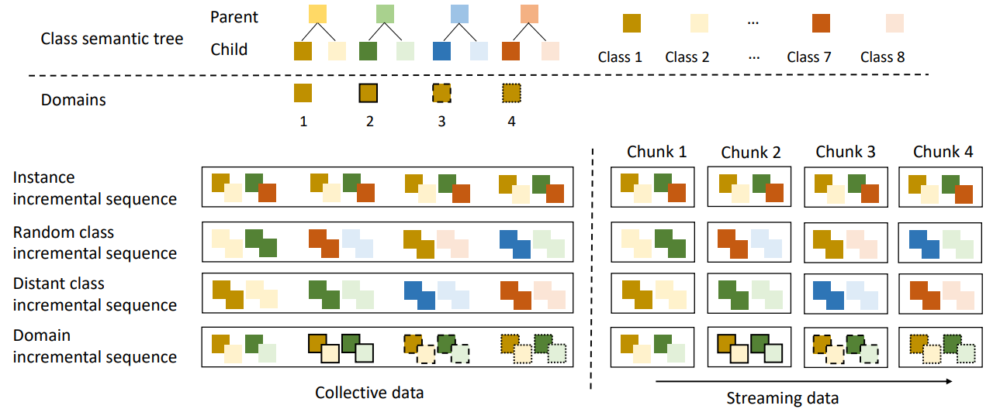
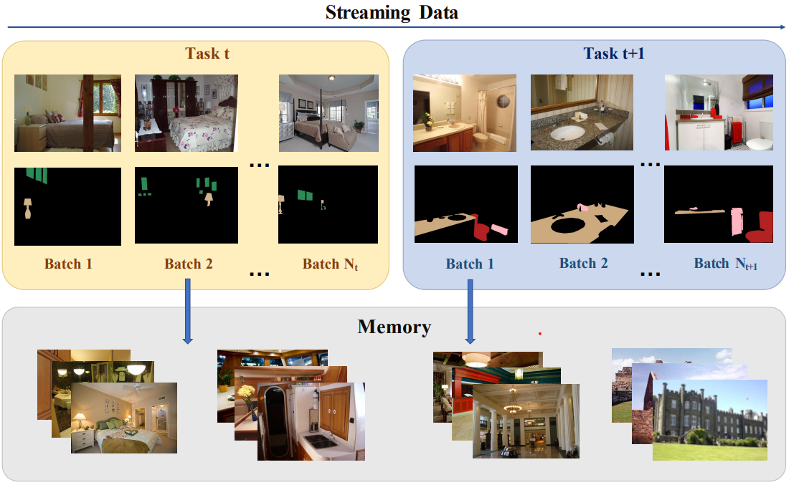
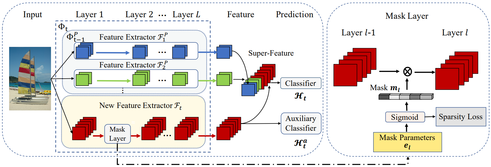
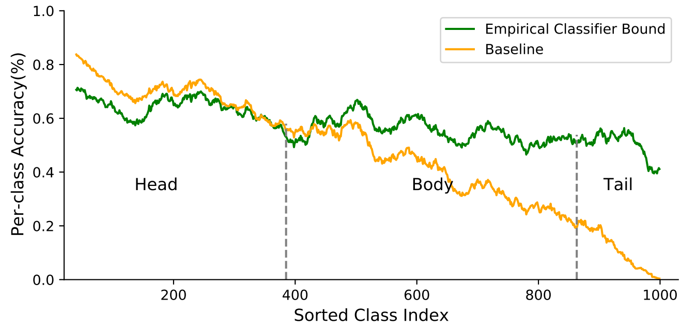
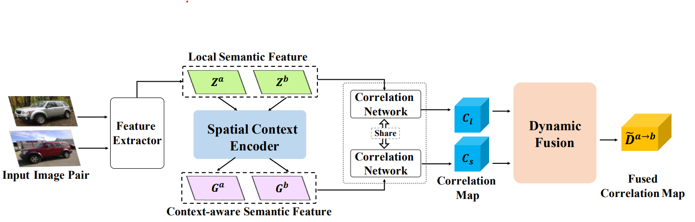
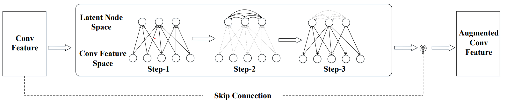
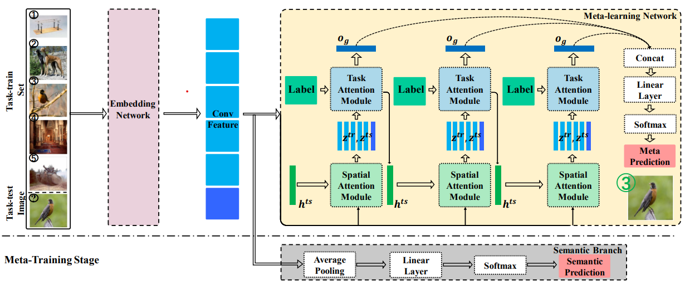

YAN, Shipeng
 |
颜世鹏(Yan, Shipeng) |
Biography
I am a final-year Doctoral (PhD) student at the PLUS Lab, ShanghaiTech University, under the supervision of Prof. Dr. Xuming He. Before that, I got my Bachelor's degree from Harbin Institute of Technology.
My research interests mainly focus on continual learning. I worked as a Research Intern in the Huya AI, and now as an intern in Noah's Ark Lab. I'm looking for a full-time job. Please feel free to contact me through the email.
News
- One paper on General Incremental Learning is accepted by CVPR 2022
- One paper on Continual Self-supervised Learning is accepted by ICLR 2022
- One paper on Class Incremental Semantic Segmentation is accepted by ACM MM 2021
- One paper on Class Incremental Classification is accepted by CVPR 2021(Oral)
Selected Publications
(* indicates equal contribution.)|  |
General Incremental Learning with Domain-aware Categorical Representations |
|  |
How well self-supervised pre-training performs with streaming data? |
|  |
An EM Framework for Online Incremental Learning of Semantic Segmentation |
|  |
DER: Dynamically Expandable Representation for Class Incremental Learning |
|  |
Distribution Alignment: A Unified Framework for Long-tail Visual Recognition |
|  |
Dynamic Context Correspondence Network for Semantic Alignment |
|  |
LatentGNN: Learning Efficient Non-local Relations for Visual Recognition |
|  |
A Dual Attention Network With Semantic Embedding for Few-shot Learning |
Services
Conference Reviewer:
- European Conference on Computer Vision (ECCV 2022)
- IEEE/CVF Conference on Computer Vision and Pattern Recognition (CVPR 2021/2022)
- International Conference on Learning Representations (ICLR 2022)
- IEEE International Conference on Computer Vision (ICCV 2021)
- Winter Conference on Applications of Computer Vision (WACV 2022)
- Chinese Conference on Pattern Recognition and Computer Vision (PRCV 2019)